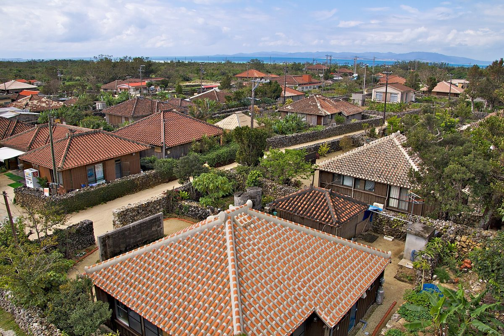
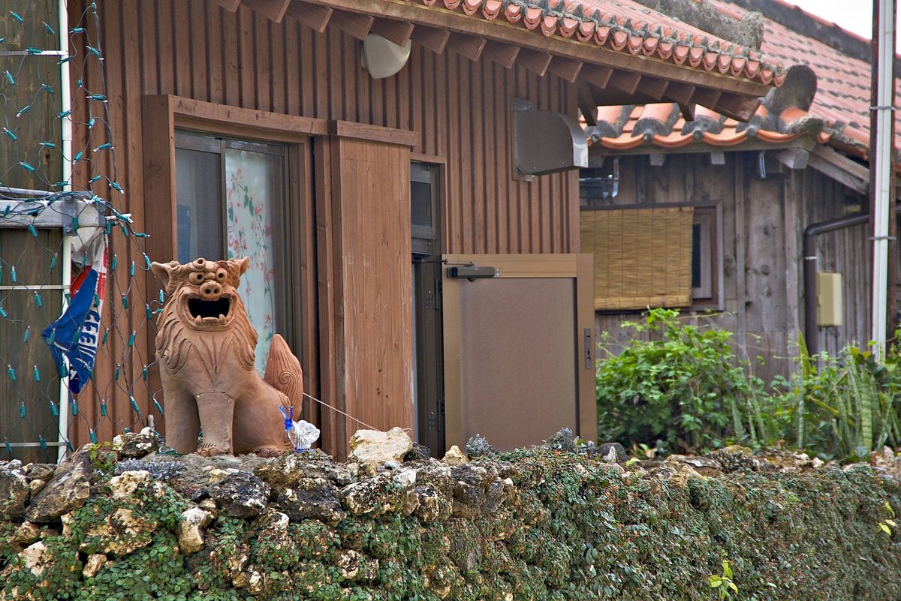

石垣搭船 15 分，時間的速度就慢下來了。紅瓦、石牆、白砂的路——這裡不是布景，是三百多位島民真實生活的聚落。所以去之前，想先跟你說幾句。
票價為 2026-06 確認的參考值，以官方為準。半日就能走完，但慢慢走才是竹富的玩法。
紅瓦的房子幾乎都有人住。庭院不要走進去、石牆不要爬不要坐——石牆是沒有水泥的乾砌，一推就垮，垮了是島民自己修。
カイジ浜的星砂很有名，但砂是不能帶走的——讓它留在島上，下一個朋友才看得到。拍照、放回去，就是最好的紀念。
白天觀光客多，搭最後一兩班船回石垣之前的傍晚，巷子安靜下來，紅瓦的顏色也最深。那個時段騎車繞一圈，你會懂這座島。

船班、行程、跟石垣怎麼搭——之後可以直接敲我們（SNS 準備中）。先看看我們想做的事。